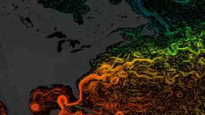

Both are made from NASA SVS 3912 (sea surface temperature, eastern North America and the Gulf Stream). Every sound is synthesized from numbers read off the pixels; there are no samples and no recordings.
Song 1: from a clip (the whole movie, 69 seconds)
Loading.
Melody = the yellow column. Every 2-second bar scans the eight columns of the picture, one eighth note each: west to east, then back east to west. Pitch is that column's mean ocean temperature: 16 notes from A3 (12 °C or colder) to A6 (28 °C or warmer), about 1 °C per step. Warm notes are also brighter and louder, cold notes duller and softer, and the note sits left or right like the column does.
The whole clip at a glance = the orange line. It is the average ocean temperature in view, bar by bar. In sound it is the bass and the held chord: the bass climbs two octaves as the view warms (about 0.6 °C per step) and the chord gets louder and brighter. In this clip the average in view rises from about 18 to 24 °C by the middle, then falls back. The camera moves during the clip, so this is a change in what is in view, not the ocean warming over time.
Then and now = two bell notes every 8 seconds. The first bell is always the temperature at the start of the clip; the second is the temperature now. A wide gap between them means a big change since the start; the same note twice means no change.
Reference tone: a soft pure E5 at the start of every bar marks 20 °C, the middle of the range. Melody notes above it are warmer, below it cooler.
Hi-hat = how fast the picture is changing. 8 to 12 hits per bar.
Kick and snare never change. They are the ruler: one bar is 2 seconds of the movie.
Numbers on the picture are the temperature (°C) read from each of the 4 x 8 cells; a dash is land.
Song 2: from a single frame (18 seconds)

Loading.
Blue rows = chord. First 4 seconds: eight strips, top to bottom, one note each. They are then held quietly underneath.
Yellow column = melody. Next 10 seconds: forty strips, left to right, one note each, moving from the left ear to the right.
Grey column = land. The melody rests, and a short tick marks each coastline crossing.
Reference tone: a soft note every 2 seconds at the frame's average temperature, so you can hear "warmer than average" and "cooler than average".